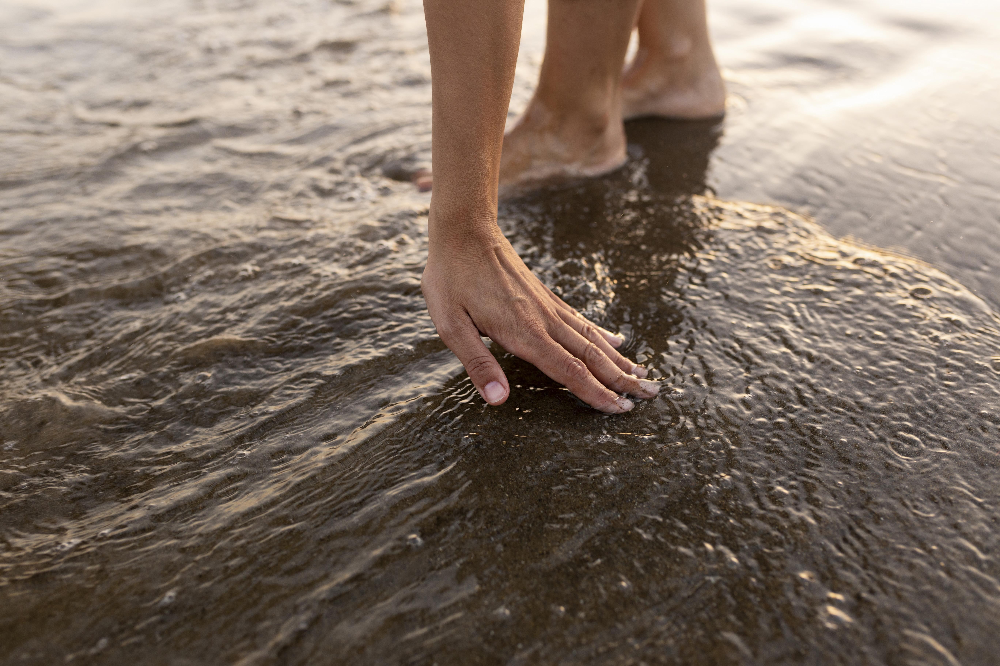
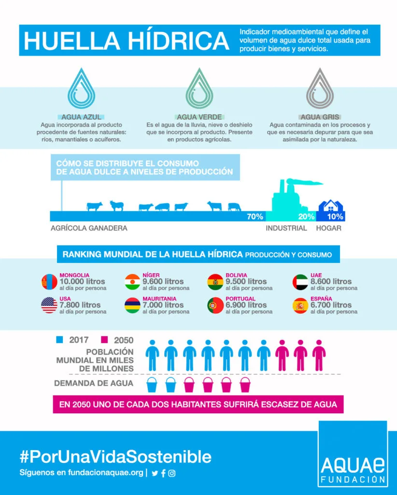

Actividad 4: Cálculo de la huella hídrica de un menú.
- Duración:
- 1 sesión
- Agrupamiento:
- Parejas / Individual

¿Vamos a por la última actividad del Dossier Agua!
A continuación deberás realizar el cálculo del agua consumida para la preparación de una comida normal. Para ello deberás aprender sobre el concepto de huella hídrica. Para esto te dejamos aquí este enlace en donde se explica en que consiste este concepto y algunas otras cuestiones relacionadas:
Que es la Huella Hídrica (en inglés)
Después de esta lectura deben quedarte claros los siguientes conceptos:
- Huella Hídrica
- Huella Hídrica Azul
- Huella Hídrica Verde
- Huella Hídrica Gris

Cálculo del consumo de agua de un menú
CALCULO DEL AGUA CONSUMIDA PARA REALIZAR UNA COMIDA:
Ahora es el momento de incluir en tu dossier lo que en realidad se consume de agua para fabricar una comida ordinaria. Para ello vas a hacer uso de la herramienta siguiente de la cual te dejamos el enlace.
Posteriormente deberás incluir en tu dossier un apartado con una tabla que refleje el gasto total de agua de la comida desglosado por cada alimento. Asimismo deberás indicar cual de los ingredientes consume mas agua su producción y explicar la razón del elevado gasto de agua del mismo, explicando el porque de los porcentajes de agua verde, azul y gris de este ingrediente.
El menú debe consistir en un primer plato, segundo plato, bebida y postre.
Calculadora de consumo de agua de alimento